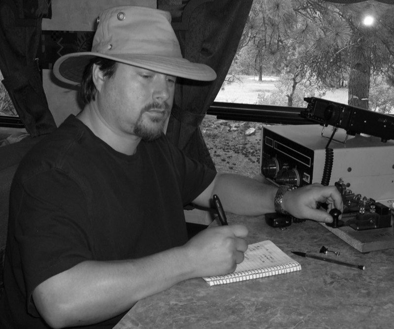
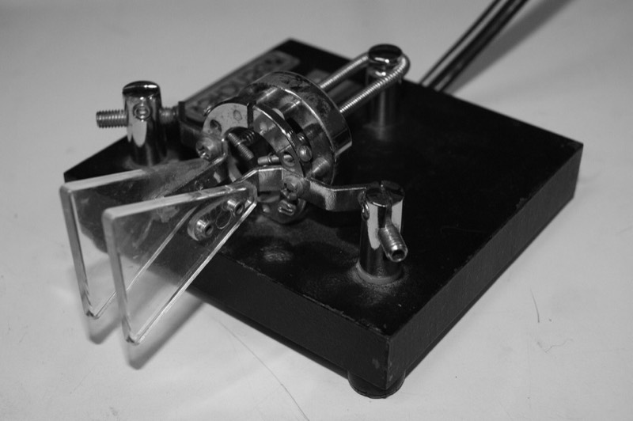

Practice
Drill on your own terms. Every tool uses your sound settings and counts toward your practice days.
60 second sprint
Hear a letter, pick it or press its key. Right answers move on at once. Wrong ones play again.

Free copy
Pick what to copy. Letters you know uses every class you've passed in First Letters and Ear Speed.

Practice key
Hold to send, or tap the key once and use the space bar. The decoder reads your timing, so clean rhythm is the only way to the right letters.
Translator
Turn any text into Morse you can see and hear. Handy for checking a word you just copied.